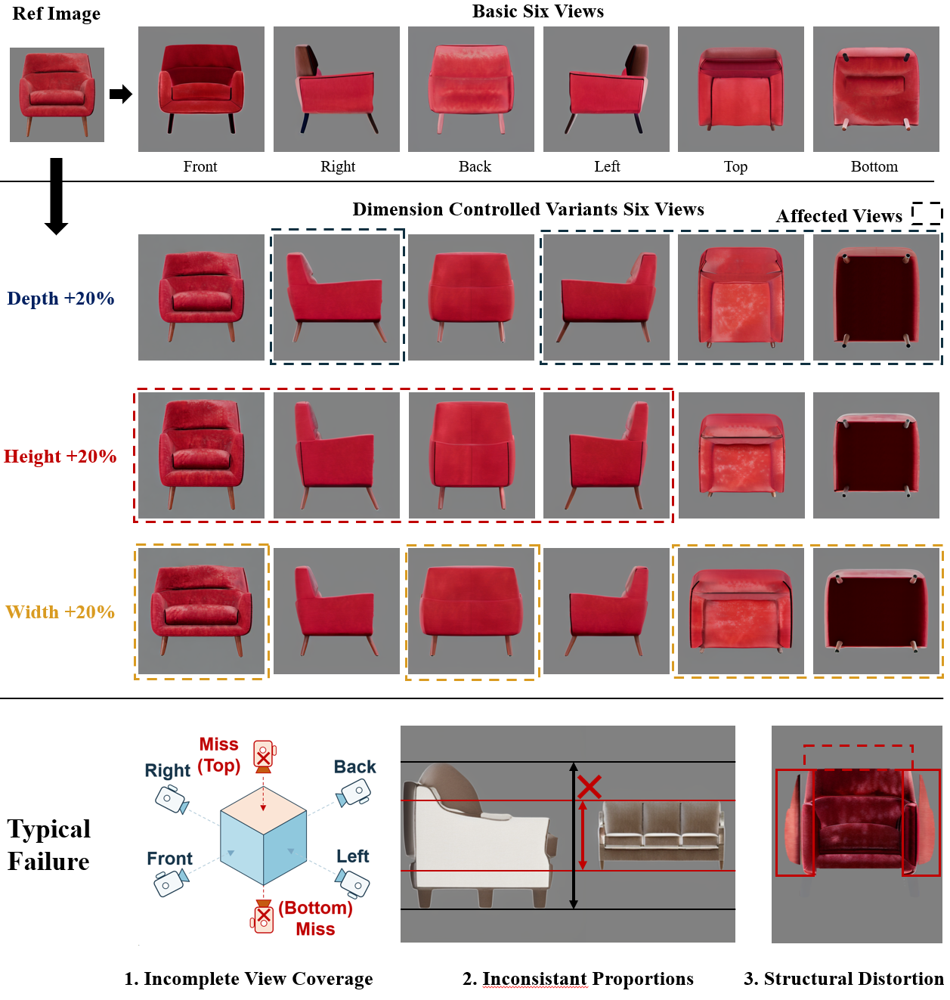

DimRatio
Geometric Multi-view Generation from an object image and explicit target dimensions, with consistent proportion control across standard views.
Task and motivation
Industrial product image generation requires complete multi-view images that accurately reflect specified proportion changes. Existing multi-view generators provide limited viewpoint coverage, while text- or layout-based controls cannot impose a shared geometric condition across views. DimRatio addresses both limitations through shared 3D geometry.
Pipeline

Generates complete standard views from an object image and explicit target dimensions.
Completes the missing standard views and establishes a complete shared geometric representation.
Uses DAAW to transform the shared geometry and provide consistent conditions for every affected view.
Qualitative results

The figure shows basic six-view completion and independent increases in depth, height, and width. Dashed boxes indicate the views affected by each dimension change.
Runnable ShapeSync verification
The released CPU demo verifies DAAW, fixed shared-camera framing, and geometry-control rendering on a procedural mesh; it does not redistribute benchmark or commercial product assets.
pip install -r requirements.txt python run_demo.py --axis width --scale 1.2 --output outputs/width_p20 pytest -q
Review-time release scope
This artifact contains the pipeline figure and a minimal executable implementation of the released ShapeSync geometry and camera components. The complete model integration, benchmark tools, experiment code, and full qualitative results will be released after publication.